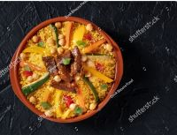
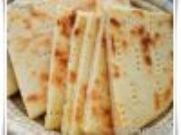
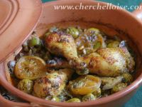
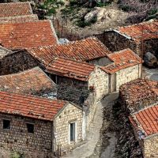
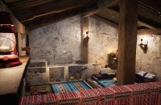
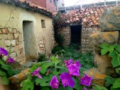

La Cuisine Amazigh
La cuisine amazighe est profondément basée sur les traditions et ressources locales, reflétant l'histoire et la géographie des régions où les Amazighs vivent. Elle est créée avec des ingrédients simples mais savoureux, souvent cuisinés pour préserver les nutriments et maximiser les saveurs.
Les plats traditionnels
- Le couscous : est un plat important qui consiste à préparer du couscous avec de la semoule de blé dur, des légumes, des viandes (agneau, poulet ou bœuf) et parfumé avec des épices comme le cumin, le curcuma et le safran.
- Le Tajine : est un ragoût cuit lentement, nommé en fonction du plat en terre cuite. Les tajines peuvent être faites de viande ou de végétarien, avec souvent des fruits secs comme les pruneaux ou les abricots.
- Aghroum : Pain traditionnel amazigh, cuit dans des fours ou sur des pierres chauffées.
- Berkoukes : est un plat traditionnel de pâtes fait avec des semoules roulées à la main, cuit avec des légumes et de la viande.
- Rfissa : Un plat de poulet servi sur un lit de crêpes trempées dans une sauce parfumée au fenugrec et au ras el hanout.



Habitat Traditionnel
Ces maisons en pisé sont construites en terre battue et sont très isolation elles rendant l'intérieur frais en été et chaud en hiver.
Les tentes en peau de chèvre sont très utilisées par les nomades, elles peuvent être montées et démontées facilement, offrant une grande mobilité.
Igherm sont des grands greniers en pierre qui sont souvent construits en hauteur pour stocker des céréales et des provisions et protéger contre les pillards.



Villages (Douars)
- Ksour : est un village fortifié du sud marocain, construit en pisé et souvent situé dans des oasis. Il y a des habitations, des greniers et des tours de guet.
- Casbahs : Grandes maisons fortifiées, souvent situées dans des endroits stratégiques pour la défense.
- Les anciennes villes Amazighes sont souvent des vieilles villes avec des rues étroites, des souks animés et des bâtiments en pisé ou en pierre.
- Ouarzazate : est parfois appelée la porte du désert, car elle a des casbahs et des ksour. C'est une célèbre Casbah de Taourirt.
- Cette ville est située en Tunisie et elle a beaucoup de maisons qui se trouvent dans les collines pour être protégée contre le temps chaud.